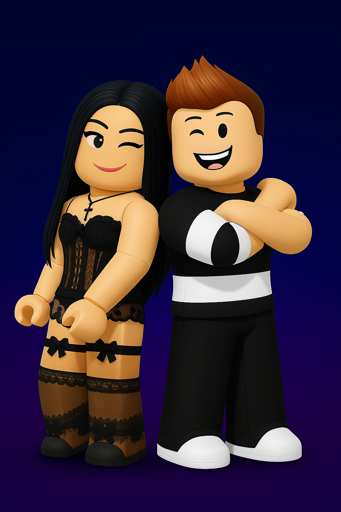

¡Bienvenidos a la primera edición virtual del mayor concurso musical de Roblox!
| Fase | Fecha | Hora |
|---|---|---|
| Fase 1 – Casting inicial | 1 de julio | 17:00 |
| Fase 2 – Finalistas | 3 de julio | 17:00 |
| Casting Jurado y Profesores | 3 de julio | 17:00 |
🶠Debes preparar 2 canciones de la playlist oficial para Fase 1. Si pasas a la Fase 2, cantarás una canción de tu elección libre.
Responde el formulario para completar tu inscripción:
Escucha y ensaya las canciones disponibles en la playlist oficial:
Carmen y Germán son los creadores y organizadores oficiales de esta edición.
Ellos te guiarán durante toda la experiencia de casting y galas. ¡Sigue sus redes y prepárate!
¿Tienes dudas o necesitas ayuda? EscrÃbenos a: